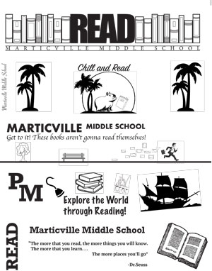

| Heath McAninch's Bookmark Printing Project
| |
| Home Print Photography Film Infographic | |
|

My groups sample sheet for the project. Mine is located at the very bottom. |
Here, we had the opportunity to share our skills and creativity with the next generation. We were instructed to create and print bookmarks for Marticville Middle School right here in Lancaster. The assignment began with us each making our own bookmark design. We started out with each of us having 4 variations of our bookmark and taking a poll from the class to narrow it down to one. We then found three other classmates and compiling all the bookmarks in one file. We then offloaded the file to the printing plate machine to get an aluminum plate made to start the mass-producing process. We then used the pneumatic paper cutter to cut our stock sheets to size. Then we attached our plate to the ink roller and ran our paper through. Finally, we put the paper back into the cutter to split each bookmark from each other. |
| Home Print Photography Film Infographic | |
|
©2023 Heath McAninch | |